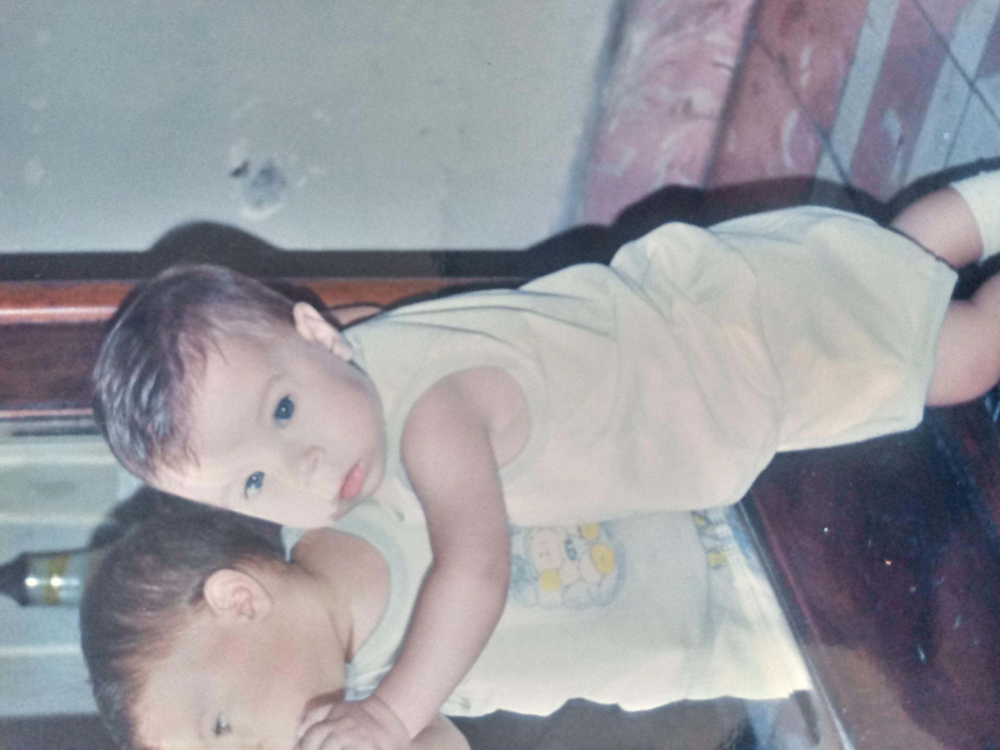
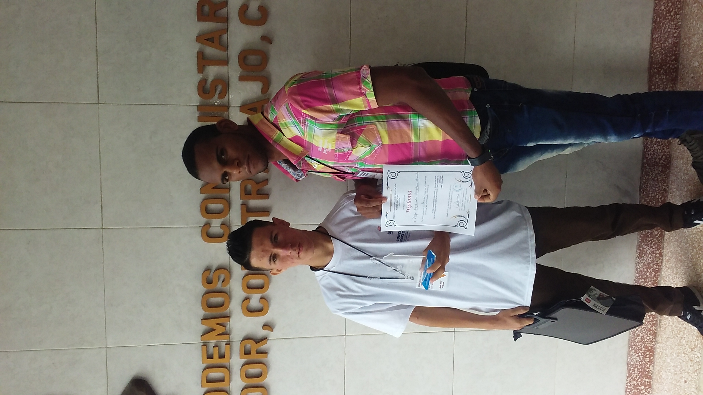
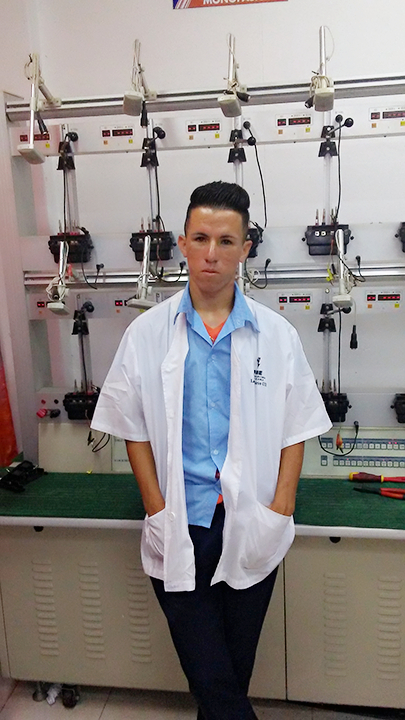

Nací el 6 de octubre de 1999, en la ciudad de Ciego de Ávila, hijo de Jorge Julián Quintero Ruiz y Gladys Acosta Martínez. En mis años de niñez, después de los dos años matriculé en el círculo infantil Palomita de la Paz, en el cual permanecí hasta el grado de prescolar.
Los estudios primarios los cursé en la escuela Agustín Farabundo Martí, donde estudié hasta el 6to grado, participando en las actividades pioneriles que se organizaban y obteniendo buenos resultados académicos.

Los estudios secundarios los cursé en la ESBU José Martí Pérez donde culminé el 9no grado. En estos tres años fui elegido monitor de matemática y participé activamente en las actividades pioneriles que se programaban. Al terminar el 9no grado me fue otorgado la carrera de Técnico Medio en Electricidad.
En Septiembre de 2014 inicio mis estudios de Técnico Medio en Electricidad en el IP Pablo Elvio Pérez Cabrera, en Febrero de 2017 participé en el Concurso Provincial de Electricidad, obteniendo el primer lugar y la posibilidad de participar en el Concurso Nacional, el cual se efectuó en abril del propio año en la Empresa Eléctrica Provincial de Holguín, donde obtuve el primer lugar. Las prácticas pre-profesionales las efectué en la Empresa Eléctrica de Ciego de Ávila, alternando por las áreas del Taller de Transformadores, el Laboratorio de Calibración de Contadores de Energía Eléctrica (CEE) y en el Grupo de Medición, mostrando una buena actitud y adquiriendo conocimientos técnicos para elevar mi nivel profesional. Culminé los estudios de Técnico Medio en diciembre de 2017 con resultados académicos satisfactorios.

En enero del 2018, comencé a trabajar en la Empresa Eléctrica de Ciego de Ávila, ocupando previamente el cargo de técnico en adiestramiento en el laboratorio de calibración de CEE, y luego pasé a ocupar el cargo de Técnico en Redes y Sistemas en el Grupo de Medición.
En el año 2020 realicé los exámenes de ingreso a la educación superior, alcanzando resultados satisfactorios y en donde se me fue otorgada la carrera de Ingeniería Eléctrica.
En febrero del 2021 matriculé en la Universidad de Camagüey para empezar la carrera que me fue anteriormente otorgada. Actualmente me encuentro cursando en la misma y ampliando cada día mis conocimientos y mejorando mi desarrollo personal y profesional.